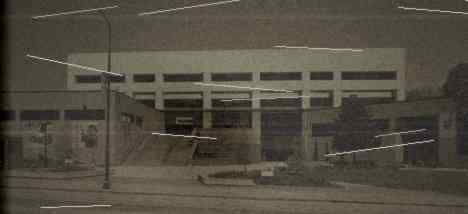
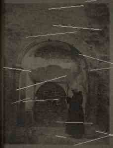
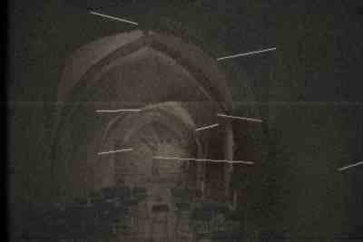
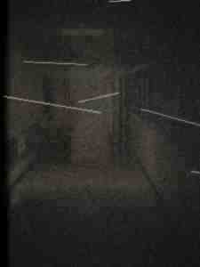
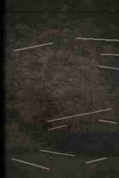

|
Home
School History
My Research
Photos
Guestbook
Cool Links Email Me! |
Photos From the Archives These are photos I found during my research at the Minnesota Historical Society on Kellogg Blvd and the school archives. I scanned them at the St. Paul Public Library on Rice Street. The scanner there is a Microtek ScanMaker E3 and its not great but you can still see enough. Some of the originals are damaged and the scanner makes them look even worse. Photo 1: Central High School, exterior, circa 1915  The school from Lexington Parkway, about three years after the building opened. You can see the original Collegiate Gothic entrance that Clarence H. Johnston Sr. designed - the castle-looking turrets above the main door. They covered all that up with cement during the 1979 Ellerbe renovation which is a crime honestly. Beautiful building. The St. Peter sandstone foundation is visible at the base. Nothing weird about this one. Photo 2: Basement construction, 1912  Construction workers in the basement during building, 1912. The concrete walls are being formed. In the background there is a deeper excavation than what the official blueprints at the Minnesota Historical Society show. Two workers are visible - they are looking down into the excavation. The geology here is St. Peter Sandstone, same stuff the Wabasha Street Caves and all the brewery caves under the city are carved into. Its soft and easy to dig through. They could have gone very deep. The question is whether they meant to go as deep as they did, or whether they found something and kept digging. Photo 3: Boiler Room, 1935  Earl Whitmore (left) with an unidentified man in the boiler room. Whitmore is smiling. He was head janitor from 1931 to 1943 when he resigned (see the history page for why). The other man is standing near a doorway in the background. That doorway leads to the B2 corridor - past the shooting range, toward the south end of the building. If you look at the darkness behind the second man, in the corridor, there appears to be a third figure standing further back. Its very faint. It could be a shadow. It could be a trick of the flash exposure reflecting off the concrete. I've stared at this scan for a long time. Zoomed in on the library computer as far as the resolution allows. I don't think it's a shadow. Shadows don't have shoulders. Photo 4: B2 Corridor, 1941  This one is very dark - bad exposure, probably a handheld flash that didn't have enough range for the length of the corridor. This is the B2 corridor looking south toward the steel door. In 1941 the door appears to be open. You can see the top of a staircase going down behind it. The flash didn't reach far enough to show what's at the bottom. I didn't notice this at first but look at the walls. Both walls. There are marks. Long horizontal streaks at about waist height, running the length of the corridor toward the door. They look like they were made by hands. By fingernails. Dragging along the concrete. Like someone was being pulled toward the open door and was trying to hold on to the walls. The streaks get deeper and more desperate-looking closer to the door. Some of them look like they have dark residue in them. This photo was taken in 1941. Before the disappearances started. The door was still open. Whatever was down there could come and go freely. The marks on the walls mean something was already happening down there before anyone started keeping records. Photo 5: Unknown, 1942 This photograph was in a separate envelope in the Minnesota Historical Society archives, filed in the wrong box. The envelope was brown paper, sealed with wax, stamped "SITE C - RAMSEY COUNTY - DO NOT REPRODUCE - PROPERTY OF THE CITY OF SAINT PAUL." Mrs. Chen at the MHS let me look through the box but when she saw this envelope she took it back and said it was from a "restricted collection." I managed to see the photo for about 15 seconds before she took it. Its very dark and degraded but you can see a room - underground, concrete, low ceiling. There are people in the frame. I thought they were standing in a circle but I was wrong. They are kneeling. Five of them, in a circle, facing inward, kneeling on a concrete floor. In the center of the circle there is something on the floor. Something dark. Not an object. The shape is wrong for an object. It has contours. It has mass. When I enhanced the contrast on the library's computer I could see that the dark shape has texture - it's not flat, it's three-dimensional. And it's wet. The flash is reflecting off of it in a way that only wet things reflect light. The kneeling figures are not restrained. Their posture is not forced. They are kneeling voluntarily. Their hands are extended toward the center. Toward the dark shape. Like they are offering something. Or receiving something. Photo 6: The Sealed Stairwell, February 1943  The sealed stairwell. Fresh concrete poured into the passage going down to the third level. This photo was taken on or around February 7, 1943 - the same day Earl Whitmore wrote his final log entry. You can see the concrete is still wet, still curing. Two men in the photo wearing city of St. Paul public works uniforms. The one on the left is facing away from the camera. The one on the right is looking directly at the lens. I've spent a lot of time looking at the expression on the face of the man on the right. I cant describe it accurately. It's not fear. Fear looks different. Ive been scared and I know what scared looks like. This is something else. It's the expression of a person who has seen something that they know they will never be able to explain to anyone, and they know that the concrete they are pouring will not be enough, and they know that they are going to spend the rest of their life thinking about what is underneath it. The man is looking at the camera like he wants the photographer to understand something. Like he's trying to communicate across time. Through the photograph. Through fifty-four years. To whoever is looking at this picture in the future. Don't open it. Photo 7: [REMOVED 11/12/97]
IMAGE REMOVED BY PAGE AUTHOR
11/12/1997 02:14 AM CST file still exists on server as p7.jpg I took this one down. I know I said I would put all the photos up but I cant leave this one on the main page. I showed it to Ryan on monday after school and he threw up in the bathroom. Im not exaggerating. He literally threw up. He said I need to delete it and I told him I cant delete evidence and he said "evidence of WHAT david, what the fuck is that thing" and I didnt have an answer for him. I shouldn't have scanned it at the library. The lady at the front desk saw it on the scanner screen and she asked me what it was and I said it was a prop from a horror movie and she didnt believe me but she didnt push it. I printed one copy. The copy is in my locker. I dont look at the print anymore because when I look at the print I can smell it. I know that doesnt make sense. Its a piece of paper. But when I look at that photograph I can smell copper and wet stone and that sweet sick smell from the sub-level and my stomach drops and my hands shake. The scan is still on the server. I removed the link but the file is still there. The filename is p7.html. I dont know why im telling you this. Maybe because somebody needs to see it. Maybe because I need someone else to confirm what I'm seeing. Maybe because I want to know Im not going crazy. Dont look at it. Im serious. If you have a weak stomach dont look at it. If you have nightmares easily dont look at it. If you are the kind of person who sees something once and cant get it out of your head, dont look at it. but if you want to understand what is under this school you have to see it. you have to see what it does to people. you have to see what it made out of margaret svensson. the thing in photo 7 is not dead. i know that now. what i thought were marks of decomposition are not. they are marks of growth. it is not decaying. it is becoming. and the face. god. the face is almost finished. it looks like margaret svensson. it has her hair. but the rest of it is wrong. everything below the neck is wrong. there are too many joints. the proportions are impossible. and its smiling. why is it smiling. |